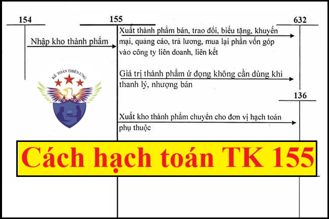

Hướng dẫn cách hạch toán sản phẩm, thành phẩm - Tài khoản 155 áp dụng chế độ kế toán theo Thông tư 99/2025/TT-BTC mới nhất 2026, hạch toán sản phẩm, thành phẩm nhập kho; hạch toán sản phẩm, thành phẩm xuất dùng nội bộ, bán cho khách hàng; sản phẩm, thành phẩm bị trả lại, thừa thiếu, thanh lý ...
1. Tài khoản 155 - Sản phẩm
Nguyên tắc kế toán
a) Tài khoản này dùng để phản ánh giá trị hiện có và tình hình biến động của các loại sản phẩm của doanh nghiệp. Sản phẩm bao gồm thành phẩm và bán thành phẩm trong đó thành phẩm là những sản phẩm đã kết thúc quá trình chế biến do các bộ phận sản xuất của doanh nghiệp thực hiện hoặc thuê ngoài gia công xong đã được kiểm nghiệm phù hợp với tiêu chuẩn kỹ thuật và nhập kho; Bán thành phẩm là những sản phẩm chỉ mới hoàn thành được một hoặc một số công đoạn (trừ công đoạn cuối cùng) của quá trình sản xuất.
Trong giao dịch ủy thác xuất khẩu sản phẩm, tài khoản này chỉ sử dụng tại bên giao ủy thác, không sử dụng tại bên nhận ủy thác (bên nhận giữ hộ).
b) Sản phẩm do các bộ phận sản xuất chính và sản xuất phụ của doanh nghiệp sản xuất ra phải được xác định giá trị theo giá thành sản xuất (giá gốc), bao gồm: Chi phí nguyên liệu, vật liệu trực tiếp, chi phí nhân công trực tiếp, chi phí sản xuất chung và những chi phí có liên quan trực tiếp khác đến việc sản xuất sản phẩm. Trong đó:
- Đối với chi phí sản xuất chung biến đổi được phân bổ hết vào chi phí chế biến cho mỗi đơn vị sản phẩm theo chi phí thực tế phát sinh trong kỳ.
-
Đối với chi phí sản xuất chung cố định được phân bổ vào chi phí chế biến cho mỗi đơn vị sản phẩm dựa trên công suất bình thường của máy móc thiết bị sản xuất. Công suất bình thường là số lượng sản phẩm đạt được ở mức trung bình trong các điều kiện sản xuất bình thường.
- Trường hợp mức sản phẩm thực tế sản xuất ra cao hơn công suất bình thường thì chi phí sản xuất chung cố định được phân bổ cho mỗi đơn vị sản phẩm theo chi phí thực tế phát sinh.
- Trường hợp mức sản phẩm thực tế sản xuất ra thấp hơn mức công suất bình thường thì chi phí sản xuất chung cố định chỉ được phân bổ vào chi phí chế biến cho mỗi đơn vị sản phẩm theo mức công suất bình thường. Khoản chi phí sản xuất chung không phân bổ được ghi nhận vào giá vốn hàng bán để xác định kết quả hoạt động kinh doanh trong kỳ.
c) Không được tính vào giá gốc sản phẩm các chi phí sau:
- Chi phí nguyên liệu, vật liệu, chi phí nhân công và các chi phí sản xuất, kinh doanh khác phát sinh trên mức bình thường;
- Chi phí bảo quản hàng tồn kho trừ các khoản chi phí bảo quản hàng tồn kho cần thiết cho quá trình sản xuất tiếp theo và chi phí bảo quản quy định của Chuẩn mực kế toán Việt Nam số 02 - Hàng tồn kho;
- Chi phí bán hàng;
- Chi phí quản lý doanh nghiệp.
d) Đối với thành phẩm bất động sản (là các công trình do doanh nghiệp làm chủ đầu tư):
d1) Thành phẩm bất động sản bao gồm: quyền sử dụng đất; nhà hoặc nhà và quyền sử dụng đất; cơ sở hạ tầng do doanh nghiệp đầu tư xây dựng để bán trong kỳ hoạt động kinh doanh thông thường.
d2) Giá gốc thành phẩm bất động sản bao gồm toàn bộ các chi phí liên quan trực tiếp tới việc đầu tư, xây dựng bất động sản (kể cả các chi phí đầu tư, xây dựng cơ sở hạ tầng gắn liền với bất động sản) để đưa bất động sản vào trạng thái sẵn sàng để bán.
d3) Chi phí liên quan trực tiếp tới việc đầu tư, xây dựng thành phẩm bất động sản phải là các chi phí thực tế đã phát sinh, các chi phí đã có biên bản nghiệm thu khối lượng.
đ) Sản phẩm thuê ngoài gia công chế biến được đánh giá theo giá thành thực tế gia công chế biến, bao gồm: Chi phí nguyên liệu, vật liệu trực tiếp; chi phí thuê gia công và các chi phí khác có liên quan trực tiếp đến quá trình gia công, chế biến.
e) Trường hợp doanh nghiệp ghi sổ chi tiết nhập, xuất kho sản phẩm hàng ngày theo giá tạm tính (có thể là giá thành kế hoạch, giá thành định mức, giá nhập kho thống nhất...). Tại thời điểm kết thúc kỳ kế toán, doanh nghiệp phải tính giá thành thực tế của sản phẩm nhập kho và xác định hệ số chênh lệch giữa giá thành thực tế và giá tạm tính của sản phẩm (tính cả số chênh lệch của sản phẩm tồn đầu kỳ) làm cơ sở xác định giá thành thực tế của sản phẩm nhập, xuất kho trong kỳ (sử dụng công thức tính như hướng dẫn tại Tài khoản 152 - Nguyên liệu, vật liệu).
g) Kế toán chi tiết thành phẩm phải thực hiện theo từng kho, từng loại, nhóm, thứ sản phẩm và phải theo dõi chi tiết số lượng và giá trị,...
2. Kết cấu và nội dung Tài khoản 155
|
Bên Nợ: |
Bên Có: |
|
- Trị giá của sản phẩm nhập kho; - Trị giá của sản phẩm thừa khi kiểm kê. |
- Trị giá thực tế của sản phẩm xuất kho; - Trị giá của sản phẩm thiếu hụt khi kiểm kê. |
|
Số dư bên Nợ: |
Trên bảng danh mục tài khoản của Thông tư 99/2025/TT-BTC thì Tài khoản 155 - Sản phẩm, không có tài khoản chi tiết
Doanh nghiệp có thể mở thêm các tài khoản chi tiết sản phẩm (như: thành phẩm, bán thành phẩm, thành phẩm bất động sản,...) phù hợp với đặc điểm hoạt động sản xuất, kinh doanh và yêu cầu quản lý của đơn vị mình.
3. Cách hạch toán thành phẩm một số nghiệp vụ:
|
3.1. Nhập kho sản phẩm do doanh nghiệp sản xuất ra hoặc thuê ngoài gia công chế biến, ghi: Nợ TK 155 - Sản phẩm Có TK 154 - Chi phí sản xuất, kinh doanh dở dang. 3.2. Xuất kho sản phẩm để bán cho khách hàng (kể cả sản phẩm là thành phẩm bất động sản đã hoàn thành bàn giao cho khách hàng), doanh nghiệp phản ánh giá vốn của sản phẩm xuất bán, ghi: Nợ TK 632 - Giá vốn hàng bán Có TK 155 - Sản phẩm. 3.3. Xuất kho sản phẩm gửi đi bán, ghi: Nợ TK 157 - Hàng gửi đi bán Có TK 155 - Sản phẩm. 3.4. Kế toán sản phẩm đã bán bị trả lại: Nợ TK 521 - Các khoản giảm trừ doanh thu Nợ TK 3331 - Thuế GTGT phải nộp (33311) Có các TK 111, 112, 131,... (tổng giá trị của hàng bán bị trả lại). Đồng thời phản ánh giá vốn của thành phẩm đã bán nhập lại kho, ghi: Nợ TK 155 - Sản phẩm Có TK 632 - Giá vốn hàng bán. 3.5. Khi doanh nghiệp xuất kho sản phẩm để tiêu dùng nội bộ: Nợ các TK 641, 642, 241, 211,... Có TK 155 - Sản phẩm Có TK 3331 - Thuế GTGT phải nộp (nếu có). 3.6. Xuất kho thành phẩm chuyển cho các đơn vị trực thuộc: - Trường hợp đơn vị trực thuộc được phân cấp ghi nhận doanh thu, giá vốn, doanh nghiệp ghi nhận giá vốn sản phẩm xuất bán, ghi: Nợ TK 632 - Giá vốn hàng bán Có TK 155 - Sản phẩm. - Trường hợp đơn vị trực thuộc không được phân cấp ghi nhận doanh thu, giá vốn, doanh nghiệp ghi nhận giá trị sản phẩm luân chuyển giữa các khâu trong nội bộ doanh nghiệp là khoản phải thu nội bộ, ghi: Nợ TK 136 - Phai thu nội bộ Có TK 155 - Sản phẩm Có TK 333 - Thuế và các khoản phải nộp Nhà nước (chi tiết từng loại thuế) (nếu có). 3.7. Xuất kho sản phẩm đưa đi góp vốn vào công ty con, công ty liên doanh, liên kết, đầu tư khác, ghi: Nợ các TK 221, 222, 228 (theo giá đánh giá lại) Nợ TK 811 - Chi phí khác (chênh lệch giữa giá đánh giá lại nhỏ hơn giá trị ghi sổ của sản phẩm) Có TK 155 - Sản phẩm Có TK 711 - Thu nhập khác (chênh lệch giữa giá đánh giá lại lớn hơn giá trị ghi sổ của sản phẩm). 3.8. Khi xuất kho sản phẩm dùng để mua lại phần vốn góp tại công ty con, công ty liên doanh, liên kết, đầu tư khác ghi: - Ghi nhận doanh thu bán sản phẩm tương ứng với tăng giá trị khoản đầu tư vào công ty con, công ty liên doanh, liên kết, đầu tư khác, ghi: Nợ các TK 221, 222, 228 (theo giá trị hợp lý) Có TK 511 - Doanh thu bán hàng và cung cấp dịch vụ Có TK 3331 - Thuế GTGT đầu ra phải nộp (nếu có). - Ghi nhận giá vốn sản phẩm dùng để mua lại phần vốn góp tại công ty con, công ty liên doanh, liên kết, đầu tư khác, ghi: Nợ TK 632 - Giá vốn hàng bán Có TK 155 - Sản phẩm. 3.9. Mọi trường hợp phát hiện thừa, thiếu sản phẩm khi kiểm kê đều phải lập biên bản và truy tìm nguyên nhân xác định người phạm lỗi. Doanh nghiệp căn cứ vào việc sản phẩm thừa, thiếu đã rõ hay chưa rõ nguyên nhân để xử lý và hạch toán tương tự như hướng dẫn tại Tài khoản 152 - Nguyên liệu, vật liệu. 3.10. Trường hợp doanh nghiệp sử dụng sản phẩm sản xuất ra để cho, biếu, tặng, khuyến mại, quảng cáo: a) Trường hợp xuất sản phẩm để khuyến mại, quảng cáo không thu tiền, không kèm theo các điều kiện khác như phải mua sản phẩm, hàng hóa... hoặc theo mô hình kinh doanh, đặc điểm sản phẩm của doanh nghiệp là giá bán sản phẩm chính không thay đổi cho dù khách hàng có nhận hay không nhận sản phẩm tặng kèm thì doanh nghiệp ghi nhận giá trị sản phẩm dùng cho khuyến mại, quảng cáo vào chi phí bán hàng, ghi: Nợ TK 641 - Chi phí bán hàng Có TK 155 - Sản phẩm. Xem thêm: Quy định về hàng cho biếu tặng b) Trường hợp xuất sản phẩm để khuyến mại, quảng cáo nhưng khách hàng chỉ được nhận hàng khuyến mại, quảng cáo kèm theo các điều kiện khác như phải mua sản phẩm (ví dụ như mua 2 sản phẩm được tặng 1 sản phẩm...) thì doanh nghiệp phải phân bổ số tiền thu được để tính doanh thu cho cả hàng khuyến mại, quảng cáo. Bản chất giao dịch trường hợp này là giảm giá hàng bán nên giá trị hàng khuyến mại, quảng cáo được tính vào giá vốn hàng bán. - Khi xuất sản phẩm để khuyến mại, quảng cáo doanh nghiệp ghi nhận giá trị hàng khuyến mại vào giá vốn hàng bán, ghi: Nợ TK 632 - Giá vốn hàng bán Có TK 155 - Sản phẩm. - Ghi nhận doanh thu của hàng khuyến mại, quảng cáo trên cơ sở phân bổ số tiền thu được cho cả sản phẩm được bán và sản phẩm khuyến mại, quảng cáo, ghi: Nợ các TK 111, 112, 131... Có TK 511 - Doanh thu bán hàng và cung cấp dịch vụ Có TK 3331 - Thuế GTGT phải nộp (33311) (nếu có). Xem thêm: Nhận tiền khuyến mại có phải xuất hóa đơn c) Nếu xuất sản phẩm để biếu, tặng cho người lao động được trang trải bằng quỹ khen thưởng, phúc lợi, doanh nghiệp phải ghi nhận doanh thu, giá vốn như giao dịch bán hàng thông thường: - Ghi nhận giá vốn hàng bán đối với giá trị sản phẩm dùng để biểu, tặng cho người lao động, ghi: Nợ TK 632 - Giá vốn hàng bán Có TK 155 - Sản phẩm. - Ghi nhận doanh thu của sản phẩm được trang trải bằng quỹ khen thưởng, phúc lợi, ghi: Nợ TK 353 - Quỹ khen thưởng, phúc lợi (tổng giá thanh toán) Có TK 511 - Doanh thu bán hàng và cung cấp dịch vụ Có TK 3331 - Thuế GTGT phải nộp (33311) (nếu có). d) Nếu xuất kho sản phẩm để cho, biếu, tặng, ghi: Nợ các TK 641, 642,... Có TK 155 - Sản phẩm Có TK 3331 - Thuế GTGT phải nộp (33311) (nếu có). 3.11. Kế toán trả lương cho người lao động bằng sản phẩm - Doanh thu của sản phẩm dùng để trả lương cho người lao động, ghi: Nợ TK 334 - Phải trả người lao động (tổng giá thanh toán) Có TK 511 - Doanh thu bán hàng và cung cấp dịch vụ Có TK 3331 - Thuế GTGT phải nộp (33311) Có TK 3335 - Thuế thu nhập cá nhân (nếu có). - Ghi nhận giá vốn hàng bán đối với sản phẩm dùng để trả lương cho người lao động, ghi: Nợ TK 632 - Giá vốn hàng bán Có TK 155 - Sản phẩm. 3.12. Phản ánh giá vốn sản phẩm thanh lý, nhượng bán do ứ đọng, mất phẩm chất, không cần dùng, ghi: Nợ TK 632 - Giá vốn hàng bán Có TK 155 - Sản phẩm. |
Kế toán Diệu Tâm xin chúc các bạn làm tốt công việc kế toán!
------------------------------------------------------------
